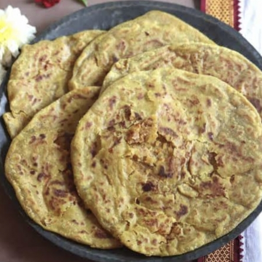

Telugu Ruchulu
తెలుగు రుచులు
BellamHoliga/
బెల్లంహోలిగ
Home Page
Click to change the language
తెలుగు కోసం క్లిక్ చేయండి
Ingredients:
For the Dough:
1 cup all-purpose flour (or wheat flour)
2 tbsp oil
¼ tsp salt
Water (as needed)
For the Filling:
1 cup chana dal (Bengal gram)
¾ cup jaggery (grated)
½ tsp cardamom powder
2 tbsp grated coconut (optional)

Instructions:
Prepare the Dough:
Mix flour, salt, and oil, then add water gradually to make a soft, pliable dough. Cover and rest for at least 30 minutes.
Cook Chana Dal:
Boil chana dal until soft but not mushy. Drain excess water and mash it into a smooth paste.
Make the Filling:
In a pan, melt jaggery with a little water. Add mashed dal, cardamom powder, and grated coconut. Cook until it thickens. Let it cool.
Stuff & Roll:
Take a small dough ball, flatten it, and place a portion of the filling inside. Seal and gently roll into a thin disc.
Cook the Holige:
Roast on a hot tawa with ghee until golden brown on both sides. Serve warm.
Tip
కావలసినవిః
పిండి కోసం:
కప్పు ఆల్-పర్పస్ పిండి (లేదా గోధుమ పిండి)
2 టేబుల్ స్పూన్లు నూనె
¼ స్పూన్ ఉప్పు నీరు (అవసరం మేరకు)
ఫిల్లింగ్ కోసం:
1 కప్పు చనా పప్పు (బెంగాల్ గ్రాము)
¾ కప్పు బెల్లం (తురిమిన)
½ స్పూన్ యాలకుల పొడి
2 టేబుల్ స్పూన్లు తురిమిన కొబ్బరి
1. పిండిని సిద్ధం చేయండి:
పిండి, ఉప్పు మరియు నూనె కలపండి, ఆపై మెత్తగా, తేలికగా ఉండే పిండిని చేయడానికి క్రమంగా నీటిని జోడించండి. కనీసం 30 నిమిషాలు మూతపెట్టి విశ్రాంతి తీసుకోండి.
చనా దాల్ ఉడికించాలి:
చనా పప్పును మెత్తగా కాని మెత్తగా కాకుండా ఉడికించాలి. అదనపు నీటిని తీసివేసి, మెత్తని పేస్ట్లా చేయాలి.
ఫిల్లింగ్ చేయండి:
ఒక బాణలిలో, బెల్లం కొద్దిగా నీటితో కరిగించండి. మెత్తని పప్పు, యాలకుల పొడి, మరియు తురిమిన కొబ్బరి జోడించండి. చిక్కబడే వరకు ఉడికించాలి. చల్లారనివ్వండి
స్టఫ్ & రోల్:
ఒక చిన్న డౌ బాల్ను తీసుకుని, దానిని చదును చేసి, లోపల ఫిల్లింగ్లో కొంత భాగాన్ని ఉంచండి. సీల్ మరియు శాంతముగా ఒక సన్నని డిస్క్ లోకి వెళ్లండి.
హోలిగ ఉడికించాలి:
రెండు వైపులా బంగారు గోధుమ రంగు వచ్చేవరకు నెయ్యితో వేడి తావాపై కాల్చండి. వెచ్చగా వడ్డించండి
చిట్కా